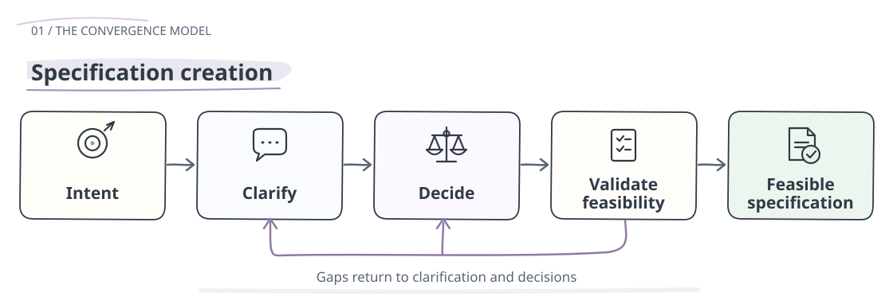
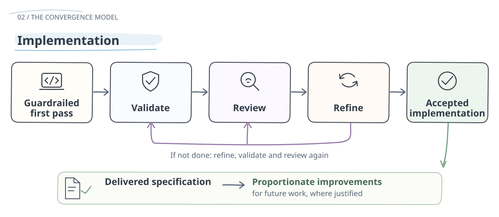

Version 0.8.4 Draft
Human-Agent Development Framework
A practical framework for reducing avoidable implementation loops in agent-assisted software development.
HADF helps teams make decisions, assumptions, evidence, uncertainty, and ownership visible before they become code.
Core Idea
Unresolved decisions create a risk of unauthorised assumptions; they do not transfer authority to the agent. HADF supports delivery through explicit decision ownership and verification against approved requirements. Better planning reduces uncertainty but cannot guarantee correct execution.


Learning may clarify guidance, correct implementation, simplify workflows, remove obsolete controls, or accept proportionate residual risk. Add controls only when justified.
What Problem Does It Solve?
AI coding agents can produce code quickly, but the expensive part of agent-assisted development is often convergence: the work required to move from an initial request to an accepted, maintainable implementation. Costs can arise from unclear requirements, poor decisions, execution or verification failures, and unnecessary implementation or process complexity.
Success combines correct, maintainable delivery, human understanding, compliance with material requirements, proportionate verification, and low avoidable rework and cost. First-pass acceptance alone is insufficient.
For Humans
HADF keeps intent, judgement, accountability, and understanding visible throughout delivery.
For Agents
HADF gives coding agents clearer specifications, guardrails, stop rules, and validation expectations.
Start Here
- Read the core framework.
- Use the adoption guide to choose the right level of process.
- Copy the agent guidance template into your repository.
- Use the small-change template for narrow, reversible work.
- Use the plan template for material changes.
- Capture what was actually delivered using the delivered-spec template.